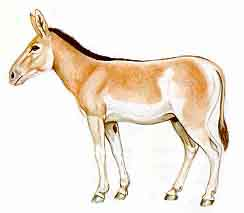
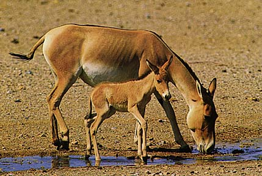

Copyright © Ali Parsa 1998-2011
All rights reserved
Onager, or Goor, as it is called in Persian, is a close relative of horse. The animal used to live in large areas in Asia, but now can only be found in Iran and probably Tukmenistan.

Picture is taken from the book 'Mammals of Iran' by Hooshang Ziaii

Photo by Gertrud and Helmut Denzau
From a Canon advertising in the National Geographic, April 1998
Picture is taken from the book 'Safari en Iran'

Copyright © Ali Parsa 1998-2011
All rights reserved